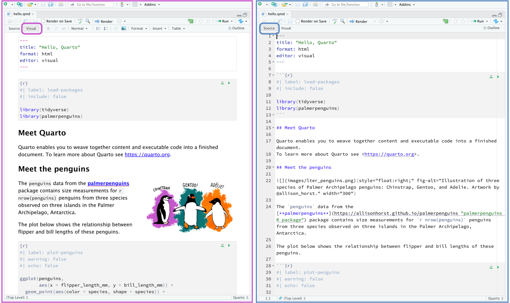

Understand the purpose and benefits of Quarto Markdown
Learn the structure of a Quarto Markdown document
Create reproducible reports with text, code, and visualizations
Export reports to HTML, PDF, and Word formats
Session Outline
1. Introduction to R Quarto Markdown
What is Quarto Markdown?
Quarto is a next generation version of R Markdown that extends the functionality of R Markdown. It is a powerful tool that allows you to create dynamic, reproducible documents that combine code, text, and visualizations. It is widely used in
Data analysis reports
Statistical modelling documentation
Interactive tutorials
Why Use Quarto Markdown?
Automates reporting and documentation
Allows for seamless integration of text, code, and outputs
Supports multiple output formats (HTML, PDF, Word, Presentations and Websites)
2. Setting Up R Quarto
Installing and Loading Quarto
Quarto comes pre installed in the latest Rstudio version but you can manually install it as follows or download the software from quarto.org
install.packages("quarto") library(quarto)
Creating a New Quarto Markdown File
Open RStudio
Go to File → New File → Quarto Document…
Give the Document a title and select the desired output format (HTML, PDF, or Word)
Click OK to generate a template
3. Structure of a Quarto Document
YAML Header (Metadata Section)
The YAML header appears at the top of the document and specifies metadata like title, author, and output format.
--- title:"My First Quarto Document Report"author:"Your Name"format:html:toc:true---
Embed R code chunks using three back ticks (```), similar to R Markdown:
```{r}
summary(mtcars)
```
Key Chunk Options
#| output-location: column # Determines the location of a plot from the code chunk#| label: fig-mtcars # Give the plot a label#| fig-cap: Miles per Gallon and Weight # Write a caption for the plot#| warning: false # display warnings from the code#| echo: true # show or hide code on render
You can also switch between a visual and source mode in a Quarto document. In the visual mode you can add a code chunk by holding Ctrl+Alt+I

Quarto Visual and Source mode
5. Exporting Quarto Documents
Knit the Document
Click the Render button in RStudio to generate the report.
Output Formats
HTML: Default output, interactive and browser-ready
PDF: Requires LaTeX installation (use tinytex for setup: install.packages("tinytex")) or type quarto install tinytex in the terminal
Word: Generates .docx files for compatibility with Word
Hands-on Exercise
Create a Quarto document:
Add a title and author.
Include code to summarize iris.
Add a scatter plot of Sepal.Length vs Petal.Length.
Export as an HTML file.
6. Interactive Group Activity
Group Challenge:
Create a Quarto document analysing the mtcars dataset.
Include:
A YAML header with a title, author, and table of contents.